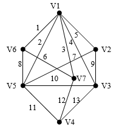
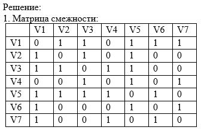
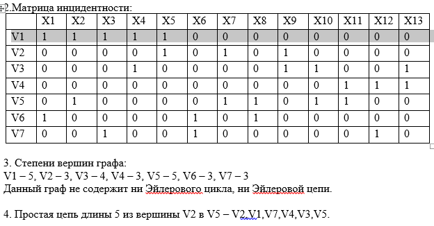
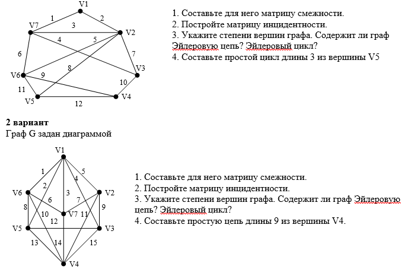

Практическая работа №11
Тема: Транспортные задачи.
Дидактическая цель: закрепить теоретические знания по основным понятиям теории графов, характеристикам графов и выработать практические навыки по нахождению основных характеристик графов.Литература:
1. Еловенко Н.А. Дискретная математика. Учебное пособие. – Волгоград. ГОУ СПО ВЭТК. 2008. Главы 2, 3.
Ход занятия:
1. Проверка теоретической подготовки студентов (определение графа: ориентированный и неориентированный, инцидентность, смежность и их матрицы, степени вершин, цепи, циклы, маршруты).
2. Инструктаж преподавателя о ходе выполнения работы.
3. Выполнение работы с использованием методических указаний по вариантам.
4. Защита практической работы с ответами на контрольные вопросы (устно).
5. Подведение итогов и оценка работы каждого студента.
Порядок выполнения работы:
1. Ознакомиться с примером решения.
2. Решить задания, соблюдая порядок оформления примера и оформить отчет (номер, тема и цель практической работы, решение задания по варианту, вывод).
3. Подготовить ответы на контрольные вопросы, сделать вывод и предъявить отчет преподавателю.
Пример решения задания:
Граф G задан диаграммой

1. Составьте для него матрицу смежности.2. Постройте матрицу инцидентности.
3. Укажите степени вершин графа. Содержит ли граф Эйлеровую цепь? Эйлеровый цикл?
4. Составьте простую цепь длины 5 из вершины V2 в V5.



Контрольные вопросы: Описать процесс заполнения матрицы смежности и матрицы инцидентности, как определить содержит ли граф Эйлеровую цепь и Эйлеровый цикл?